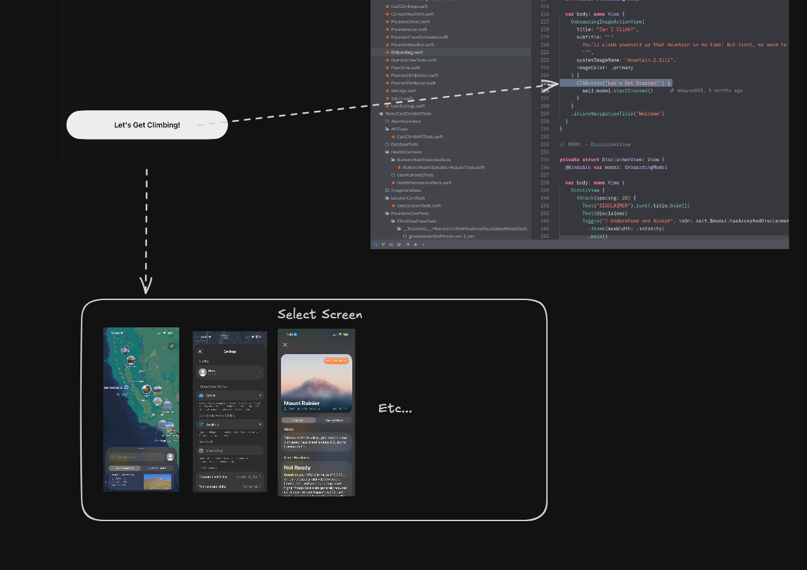
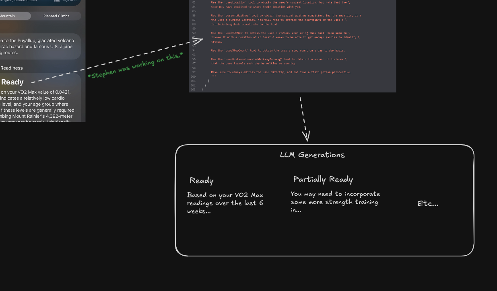
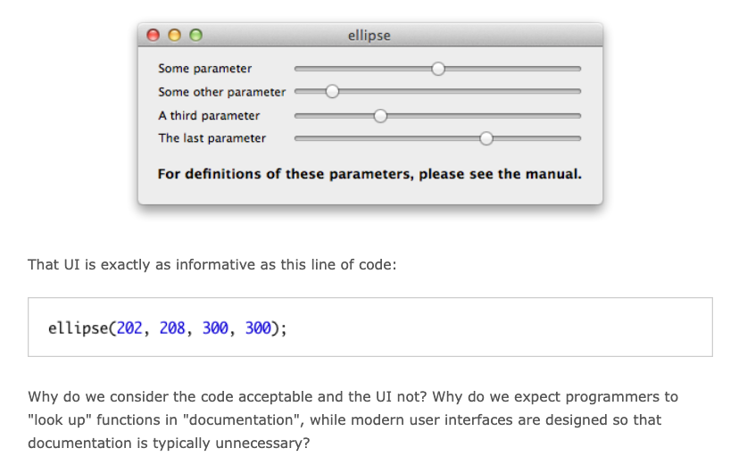
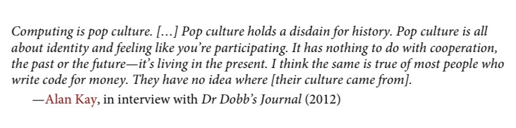
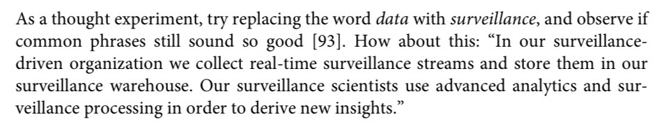

Global Notes
Total Reading Time for all Notes: -- Minutes
I have lots of ideas (as all INTPs seemingly do), but not enough time to write about them formally. In that case, this will serve as a structured in-the-moment brain dump for various things that are half-baking in my hollow cranium.
Thoughts on the Future of Libraries
What’s the point of libraries now that one can just generate them? The inital question I posed above comes from this article, but I’ve also watched others give their thoughts on the topic like Theo’s video.
This is a great question, and in fact I did just that last night for my new SQLiteVecData library, which provides interop for Structured Queries and SQLiteData with the sqlite-vec extension. That being said, I still shipped it as a library and put it publicly on the Swift Package Index.
That only begs the question of why I did this. After all, the library is also something you could generate yourself with just a few specs/plans in a short amount of time.
When we ask the question about the relevance of 3rd party libraries going forward, we have to consider a few things.
- What are we depending on?
- What are the costs of getting it wrong?
- What is the minimum knowledge threshold required to maintain it?
- Will I reuse it across different projects?
- etc.
These of course are all questions you would’ve asked yourself in the pre-agentic era, but it’s certainly now worth asking yourself these questions again from first principles.
From what I’ve found, simple libraries that merely save syntax are almost certainly things that you should generate yourself. This would include things like HTTP API clients, common UI components, things like react-hook-form, or even just any sort of basic wrapper functionallity.
For instance, in the Swift world there are many HTTP client libraries
that wrap URLSession, though 2 of the more significant
libraries are Alamofire and the OpenAPI Client Generator from Apple.
However, for all my projects I still just use
URLSession with very minimal generic abstractions on top
of it. In fact, in today’s world, I see even fewer benefits of using
things like Alamofire and the Open API generator directly. For the
former case, agents are trained on all of the common HTTP strategies
that Alamofire implements. In the latter case you could simply hand
the agent the API documentation, and it could probably generate the
client itself.
SQLiteVecData also falls into the thin wrapper category, which is why it was so easy to generate. Yet, the reason I published it is because I plan to reuse it in different projects, and it would be a waste of tokens for me to generate it again and again. So I suppose another benefit of 3rd libraries is that they could potentially reduce token consumption, even if they are a simple wrapper.
Though, one of the other questions people have of course is related to needing to coordinate with maintainers to resolve any bugs/missing features in the 3rd party library. Why should I have this communication overhead if I can just generate things myself?
For source-available libraries, you could always make your own fork depending on the license, and then modify the existing library using agents. In fact, this is the primary reason I still am publishing even simple wrapper libraries like SQLiteVecData. Even if someone wouldn’t install the package directly into their project, agents could almost certainly both fork and add/modify any behaviors in the library. It would also likely do that faster than generating your own solution from scratch, but in this case you still own the dependency.
Even if you don’t modify the library directly, and still opt to generate your own implementation, you can also use the libary’s source code as a way to guide the agent in your own internal generation through injecting it into the context. After all, whenever I would opt to write an internal implementation of a library in the pre-agentic world, I would still commonly look through the existing solution’s source code as a reference.
So wrapper libraries may not be useful to install and use directly, but their mere existence certainly can help when generating your own internal solution.
That brings us to more complex dependencies such as React, SQLiteData, GRDB, etc. In these cases, the library implements some sort of robust component that took significant amounts of engineering time (eg. UI reactivity for React, CloudKit sync engine for SQLiteData, Proper database connection/concurrency/transaction management for GRDB.) Generating these yourself will be a challenge, and is definitely a decision you should make conciously.
For these dependencies, I would still be inclined to use them directly. Either because the cost of an unreliable implementation is too high, or because the dependency provides a unique way of thinking for building parts of your system (eg. React’s component model).
Even then, when you need to make changes you can still easily fork and generate additional features. In fact, it’s never been easier to create and maintain internal forks of existing libraries.
I think this is fantastic. If someone decides to fork one of my libraries, and adapt it for their own purposes instead of installing it directly, then I treat forking as a bigger win for me. It shouldn’t just be a binary choice between installing and using directly, or generating from scratch. There’s certainly a middleground here, and not acknowledging it is a very limited outlook.
— 1/26/26
Communicators and Mediums
In the world, we often value one’s ability via their communication skills. That is, the ability to communicate is weighed heavily in one’s favor if they can do it. Likewise, not having strong innate communication skills acts against a person often in ways they don’t understand.
Let’s say I ask you to explain a complex topic to a 5 year old, like Albert Einstein wants you to. Your explanation will likely diverge to using visuals, and almost certainly not complicated text passages. In this case, that would be a good use of your communication skills.
However, if I forbid you from using visuals, what would happen then? Chances are, no matter how good of a communicator you are, you will struggle with your explanation. 5 year olds don’t have a sophisticated vocabulary or much understanding of complex ideas since their brains are still developing, so it’s less likely that text passages (which are incredibly abstract) will work.
I see this as a problem with common tools like Slack, Github, Zoom, Google Docs, Excalidraw, etc. today. If your team uses all of these tools, then the entire collective knowledge base held by your team is essentially fragmented, and the only way to make any sense of it is via good communication. Yet, even the best communicators accidentally leave our relevant context, or otherwise mistate things. In my experience, a lot of this is merely caused by simply forgetting to add those points, or assuming that the audience has that context. The latter can be an especially fatal mistake if the assumption is incorrect.
This is why I hold the general view that one’s ability to communicate is dependent both on their communication skills and the available mediums of communication they have. Someone who can draw well, but not talk, can draw a picture worth 10,000 words. Take away drawing as an available medium, and they can’t communicate all of a sudden.
An interesting fact, we all seem to crave looking at graphs and charts today, but did you ever consider how those things were invented? In fact, in the nearly 200,000 year observable history of humanity, only 240 years ago in 1786 did William Playfair invent the modern chart in his book The Commercial and Political Atlas.
Yes, that means that Newton, the invention of the modern state, the Scientific Revolution, and much more were invented without such a visual. Yet the key thing to understand here is that mediums like the chart enabled far more scientific discoveries in subsequent centuries.
Computing went through this kind of revolution in the 60s and 70s through the great research labs of the time (SRI, ARPA, Xerox, etc.), and gave rise to the GUI, internet, personal computing, and much more that we take for granted today. Though the key thing to understand was that those groups had a very different view of computing as do we today. Today, we’re obsessed with boosting productivity through automating work-related tasks instead of boosting collaboration through shared knowledge systems.
However, the thing to realize is how many ideas we’re missing because there is no UI for them. If your team uses Slack, Zoom, Github, etc., then you’ve fragmented correlated knowledge across a bunch of isolated apps. When 2 people are talking about a feature in Slack, is Slack inherently linking the relevant lines of code, analytics, crash reports, etc.? Or is it up to one of the those people to add the relevant context? What if the relevant information is completely external to the team? How does that get linked?
How many ideas are you simply not thinking of because you simply can’t see them through the UIs presented by the standard suite of tools? What if a different UI could get you to think of the right ideas?
In a world where everyone says its easier than ever to build your own tools, I would expect there to be some progress in the near future. Your internal recreations of Slack and Zoom into your team’s knowledge ecosystem can crash a few times per day, don’t need a fancy UI, and don’t need additional people to communicate with any third parties.
From a business competition standpoint, if you only use the standard tools of today, then you’re on the same playing field as everyone else. It’s now more possible than ever to change that no matter how many resources you have.
— 1/25/26
Performant Code and Agents
Of all kinds of code that I’ve tried to get agents to write, performant code is by far the hardest. It’s easy to get it to spit out code for a parser or for some cool canvas effects in a web application, however if you don’t know how those things behave with heavy workloads it’s going to be quite rough.
I’ve also seen it suggest false paths with respect to performance
optimizations as well. For instance, in Swift Stream Parsing, the
primary bottleneck is key path indirection in writing to a value on
every single new byte, and the amount of branching from byte-by-byte
parsing. This massively slows things down, and due to the specific
nature of the library is completely unavoidable. That’s why I don’t
recommend it as a replacement for JSONDecoder and
Codable, but rather for very specific scenarios such as
parsing structured output from an LLM.
Yet the LLM will still try to come up with proposed speedups, possibly for the sake of making one feel competent. (eg. It came up with an approach that would cache a stack of appended key paths instead of recreating the path from scratch on every new value detected. It turns out that didn’t help all that much because the stack is often obliterated and recreated when entering/exiting objects and arrays.)
Engineering knowledge is now more important than ever it seems, especially when dealing with a confident sounding LLM. Let’s not forget that.
— 1/22/26
Geoffrey Huntley Did Not Kill Software Development
If you’ve been like me and are trying to not be left behind™ , you may have heard of a recent development in which the Simpsons have virally taken over twitter. If you haven’t heard, and because you absolutely will be left behind™ otherwise, it’s called a Ralph loop. The idea is quite simple, is not tied to any plugin or tool, and consists of running an agent in a loop with a fresh context for each iteration. Often, if the agent seems to be doing well in this loop, you can leave it unsupervised to do its own thing.
However, if you’ve read any of Geoffrey Huntley’s posts, or watched some of his talks, you’ll find that he likes to directly point out that he, Geoffrey Huntley himself, has killed all of software development. So, now that modern software development is $10.42 an hour, how could he be wrong about this?
Let’s imagine an existing iterative development process in which developers are assigned tickets, and they complete them one at a time until the process is finished. Now, normally we’d like to think there are no roadblocks, but it turns out they happen all the time and intervention is needed. Some tickets get delayed, put on the backlog, or even scraped entirely for all sorts of various reasons.
In the case of Ralph Loops, Geoffrey Huntley himself states that you must step in and put your engineering hat on when one of these roadblocks are encountered. Then supervise the agent for a few more iterations before going back to DJ-ing.
So we have a live running process that we need to communicate with to get around a road block in its current path. There seems to be a required collaboration between machine and human to make this communication possible. Therefore, there has to be an interface somewhere to do this. The agent is perpetually running in a loop, autonomously or not, so any updates to the process that we make will therefore be received and implemented pretty quickly.
In other words, this is a form of live programming! It’s a concept that was widely important in the 70s at PARC! Smalltalk was such a good example of a live programming system, and any change to the code would be recompiled into the system incredibly fast. So fast, that the change itself would be visible in real time unlike most programs today where you would have to recompile and run the entire binary from scratch.
Once we start thinking about programming as moving around living and real things, a lot of powerful ideas are unlocked. For instance, we see how programming becomes more about dynamic processes rather than manipulating static bits inside data structures. We’ll also have to take parallels to the physical world in which beings in society can be considered running programs, and how we design infrastructure for those programs.
However, I want to make clear that a loop is just one kind of process, and that thinking all of software development in terms of mere loops is a very limited and short-sighted idea. This isn’t to say that the Ralph Loop has no merit, but rather that on its own it’s not even close to the style of thinking and operating that is actually needed here. I think even Geoffrey would agree with that statement by the way.
Us humans are also theoretical biological ralph loops that are always running, but we don’t have to repeat very defined processes thanks to free will. We generally have to make decisions based on information, and we also very much like to say the words “if” and “when”.
How will one orchestrate this for continuously live running agents? Well if how we handle the physical world tells us anything, we’ll need lots of processes in place. Those processes will further have to be compatible with dynamic behavior. Additional processes will also be needed to create new processed in a meta-language like fashion.
So there will be quite a lot of software development in fact, because inevitably there will be so many edge cases for Ralph loops that we’ll need processes to handle them. In other words, at this moment is our chance to create a new programming environment (not just textual language) that prioritizes processes and building systems rather than just enhancing our ability to write text faster.
This last thing is absolutely incredibly important, and messing it up can have serious consequences. Anyone responsible for building such a system at the bear minimum should take time to understand many of the ideas from the pioneers of computing, and absolutely not proceed with anything until this paper has been fully read and understood. The last time someone attempted this without reading that paper, we got the web and a lot of regret from its creator.
I would rather that not happen this time.
— 1/21/26
Most Systems are Safety Critical
This might sound quite ridiculous to say, but I think of TikTok as a safety critical system. Yes, in the same sense as medical devices, automobiles, etc.
With that latter kind of system, it’s quite easy to conclude that “bug in software -> potential death”.
For TikTok, I would say that “bug in user interface -> potential death”, where the user interface is naturally a subset of software. TikTok’s biggest user interface bug is keeping you endlessly trapped in a false perception of reality. This has no doubt led to deaths and widespread pyschological issues across society.
Though even a simple bug in the code can cause issues. If TikTok was taken offline from such a bug, you may think of it as just a simple inconvenience. However, their user interface bug has created quite a psychological dependence on the platform for younger generations, and taking away an addictive substance abruptly usually isn’t a good cure. Also, for better or for worse, TikTok is an archive of collective knowledge that may need to be accessed for non-trivial purposes, so workflows that depend on that archive (eg. Court) may be disrupted.
If we look at the overall landscape of damage, would we say that automobile accidents, or mental health issues are bigger?
Of course, both are bad, but inuitively we more clearly see the consequences of automobile accidents over mental health issues. In fact, many say that mental health isn’t a real problem!
Automobile accidents are also very easy to measure compared to the effects of mental health issues. To measure the latter, you need to use more science, and often infer conclusions based on a number of downstream indirect measurements (eg. An oversimplification: Poor mental health -> bad performance at job -> company loses money).
Unfortunately, most people think of science as a jumble of facts instead of as a way of thinking, and will use facts discovered by scientific thinking when it’s convenient for them, which is often when trying to win an argument. They’ll claim that their ideology “follows the science”, but in truth they are just using rhetoric, which is exactly the opposite of scientific thinking.
Jumbles of facts are also not a replacement for systems understanding. If we don’t universally learn the latter as a society, we’ll never acknowledge many of the real issues caused by our man-made systems. You may believe that universal learning is practically impossible, but we’ve already achieved it with literacy. Nearly every citizen on the US can read at least a little bit thanks to public education, which is why TikTok even works as a business in the first place.
Regardless, I’m going to take a wild guess and assume that most software engineering at TikTok is the typical kind of gluing things together, often between tightly coupled distributed services (Though TikTok is at the scale where microservices make sense), possibly skipping out on tests for time’s sake, and writing “good enough” code to reach arbitrary deadlines.
Does TikTok need assembly level code verification like other safety critical systems? Probably not. However, its user interface surely needs to go through real clinical trials, and its infrastructure also needs to be heavily audited to prevent outages from blocking data access entirely.
— 1/17/26
LLMs and Creatives
To add on to my never ending writings about LLMs and systems design, we’ll now address actual creative work. To define creative work, I’ll consider it as any body of work that inherently produces novelty. To this extent, art, writing, music, etc. are all included.
As I’ve stated previously, the point of creation isn’t to have a model generate a bunch of variants, and then have a human pick the best one. Whilst a model can generate creative work far faster than a human can create it, at the end of the day LLMs are really just incredible statistical pattern matchers based on a limited context window.
Good creative work often doesn’t follow statistics, and is rather an output of intuition. The intuition is required for novelty, because statistics by its own nature must use what already exists.
My primary role in the economy is to build software, and to those ends the code is required to be written in a certain way to produce a quality system. Robust software often requires measuring statistics in some form, whether that’s through tests, infrastructure costs, performance benchmarks, analytics, or whatever else. Improving these things is often an optimization problem, which is a perfect problem shape for pattern detection algorithms like LLMs. Generally, this doesn’t take the meaningful work out of creating software, because the actual hard creative work typically happens in one’s head long before that sit at their desk.
Similarly, the role of airline pilots is to transport passengers or cargo from one destination to another. For each destination and the environment around it, there is an optimal flight path that one can take. This is an optimization problem for which autopilot is the current solution.
However, art, music, and writing are absolutely not optimization problems, and trying to make them optimization problems is an absolutely terrible idea. The point of pure creative output is to express ideas, often in an open-ended form, and to communicate to other humans. Without that, we lose out on so much, including learning novelty required to design more robust systems.
Does that mean LLMs are an entirely bad idea in creative fields? No, but they need to be working to enhance creative output rather than taking away the process entirely. The solution to this clearly lies with the design of LLM-based tools.
LLMs have an inherently large corpus of knowledge, and are more available than other colleagues to review existing work for example. As such, they can offer realtime feedback by picking up on queues from watching humans create. In pair programming for instance, the partner watching can pick up and learn from just seeing the driving partner type code without any additional communication.
Right now, LLMs almost entirely accept specifically crafted textual/file-based prompts as inputs. Often, these prompts are entered into a tiny text box on a window somewhere off to the side of the actual creative work. Therefore, by nature, one has to stop doing any sort of creative work in order to engage with the LLM. This in turn, takes one out of the creative flow, and as a result is likely to produce a worse overall outcome.
In other words, we need more forms of inputs! If you keep the input mechanism to entering text and dragging files into a tiny text box, almost certainly people will be upset that the fun is being taken out of the creative work.
— 1/17/26
Skill Atrophy
One of the biggest counter arguments I’ve seen to agentic coding is the idea that your skills will atrophy if you start adopting agents to write all the code. Firstly, while the agents are now good enough to write most code in many cases, they certainly aren’t good enough to write all code yet. So at least on that front, your handwriting skills will still be necessary for quite some time.
However, the main point that I want to make here is that you can only upskill so much by repeatedly manually writing simple UI components, network calls, database queries, caching, or simple business logic. That is, writing the code for these things isn’t typically all that hard, but rather more time consuming than anything else. The hard part is generally how all of those components are orchestrated in the larger system, and how they are isolated from one another. That’s why mobile developers love talking about app architecture and design patterns.
For IO bound systems, you can generally write the code as verbose as you want, as decoupled as you want, and favor readability over performance. At the end of the day, you’ll likely still have fine performance at the individual lines of code level regardless of the style you choose. This is because the actual application performance optimizations generally come from designing a better higher level architecture with less latency/throughput/better resource utilization/etc. This architecture largely exists outside of the code.
Now of course, for compute bound systems the actual code matters a lot
more. You can’t just add 15 levels of indirection, or use convenience
algorithms (eg. .map in JavaScript) if you need top-notch
performance. Even choosing between contiguous vs non-contiguous memory
based data structures can have a massive impact on performance in such
cases.
Thirdly, there are frameworks that often require stretching a language to its limits to provide a more convenient API to end-users. Often times, the interface needs to be carefully crafted, and in statically typed languages, the way you define types is akin to a work of genuine art. I still remember when my colleague wrote an internal TRPC clone, and the typescript types were an absolutely beautiful work of art to admire.
Generally speaking, I think skill increases for most programmers come from either investing in better architecture, writing performance intensive code, or writing framework code. Even just spending a weekend writing a fast JSON parser by hand will probably improve your skills a lot more than writing 300 HTTP API calls by hand over the next few months.
Right now, I think those things are what agents are lacking in, because both require lots of precision to get right. I imagine agents will improve at both those things in the foreseeable future, but the improvements will be slower than the ability to churn out more IO based systems. In the real world, it just seems that more IO bound systems are directly making money than compute bound systems, so obviously the model improvements will follow that direction.
In the meantime, if you occasionally opt to write performance intensive and code that requires precision by hand, then your skills will probably continue to increase despite using agents for everything else. At the end of the day, novelty in writing code will yield more improvements.
— 1/15/26
The Agent is Dark
How much of your system can you see from this?

Or this?

I don’t see anything but a black background, a text box, and a weird animal looking thing. We have a long to go…
— 1/15/26 (2:13 AM)
Native vs React Native in 2026
Ah yes, the classic debate.
For context, I’ve worked professionally in both Swift on the iOS and watchOS side (alongside many open source libraries that I maintain), and React Native with Expo.
In the past, my opinions on the matter were quite nuanced, but were something like this.
- Native code generally has less dependencies, and platform feature are available as soon as Apple releases them.
- It’s easier to do platform UI and extensions (eg. Widgets) in native.
-
Persistence and storage are definitely better in Native.
-
expo-sqliteis quite limited compared to GRDB and SQLiteData. - React Native libraries tend to be geared towards simple use cases.
-
-
Native code is easier to get right and make performant given that
it’s generally compiled to machine code and not interpreted.
- Both Native and React Native can build great apps, but generally the best apps I’ve used tend to be native.
- React Native has the advantage of speed of shipping.
-
React Native is great for unified UI across both iOS and Android.
- Skia is also quite fine for graphics.
-
API back deployment is easier in React Native.
- It’s quite easy to build a React Native app that supports many previous OS versions, whereas it’s annoying to support more than the past 3 in native Swift apps.
Generally speaking, the more platform integrated your app, the more likely you want native. If you value more of a custom and brand universal UI across multiple platforms, then React Native isn’t a bad choice. In many cases, you can combine both.
However, I’m not sure this is the right stance to take for the coming future. Agentic coding has made the cost of writing code cheap, and the cost of understanding and building quality systems has only increased. If code can be written faster, and existing systems can be built faster, then the only way to stand out from the competition is to build ever increasingly robust systems. We need to understand what we’re building now more than ever.
React Native, Flutter, KMP were all created on the premise that you wouldn’t have to write 2 codebases twice for the same app. This benefit is negated if writing code is no longer the bottleneck it once was. Instead, that time can be spent deeply understanding the technical aspects of iOS and Android respectively, as well as doing a host other design tasks.
In other words, I’m starting to see diminishing value in React Native. Perhaps if you’re a one person team, and you’re already familiar with React + TypeScript, it may be the best option.
Though I would strongly consider whether or not you could spend time learning the native technology in depth, especially if agents can handle a lot of the code for you.
Though I recommend avoiding Xcode as much as possible. I only use it as a debugger and for SwiftUI previews, otherwise Zed.
— 1/14/26
Handwriting
With agentic coding seeming to gain more adoption, one has to ask what will happen to the act of handwriting code, because seemingly LLMs are generating more and more code. Anecdotally, I can atest to seeing a large increase in LLM generated code in my work, but others seem to report even larger swaths of code (up to 90% or even 100%!) being written by LLMs.
Of course, one naturally has to still be responsible for the code at the end of the day, no matter how it was written. Therefore, you can’t just vibe code (ie. Not ever reading the code) your way through a project if you want it to be taken seriously from an engineering standpoint.
Though I’ve seen an almost complete rejection of handwritten code from a lot of agentic coders in recent times. Almost to the point where it’s become a social sign of weakness if you decide to write any sort of functionallity by hand rather than using an LLM. It’s true that with enough context/prompt engineering, you can get the LLM to output anything that you want. Though, for some tasks, such as performance intensive code where every line counts, it would probably just be faster to write code by hand. Of course, I expect LLMs to be able to cover more of these cases in the comming months with minimal intervention, so the fact that handwriting is faster may only be a temporary thing.
That brings me to my controversial take, which is that I’m not in favor of the “absolutely everything has to be written by an LLM mindset” because it undermines the value of handwriting. Why do we write things in general?
It’s to understand things better, because writing is a form of tinkering. Tinkering is what allows us to explore a tangible concept from many different aspects, and by its own necessity it requires failing over and over again. In traditional writing, you’ll often make mistakes, be forced to press backspace, and try again. Each backspace an re-attempt is a new attempt with more knowledge than the previous attempt.
See Paul Graham write one of his essays in real time to see what I mean. If you play the animation, you’ll see the entire title of the essay change from “startups in ten sentences” to “Startups in 13 Sentences” as he writes it! In the process of writing by hand, he found 3 additional important points to make dedicated sentences.
In a world with massive amounts of code being generated, such understanding becomes even more essential because now each system has far more moving parts. If you just review the LLM generated code and move on, you lose an entire dimension of learning, and ultimately your skills to work at a deeper level will atrophy. Actually writing bits of code by hand, even if most of the work is done by an LLM, will still help quite a bit in that understanding because you’ll be tinkering with the code.
Now from a cost benefits perspective, there’s definitely a tradeoff. If you spend to much time tinkering, you risk moving too slow. If you spend no time at all tinkering, the lack of understanding may in fact slow you down in the long term. Will the models reach a point where looking at handwritten code is no longer necessary, probably. However, I still think we’re ways away from that, and even today people still look at and read assembly code for all sorts of various reasons. That’s why Godbolt exists.
— 1/12/26
Opus Spam
One of the interesting things I’ve taken note of is how many people are doing essentially what I call “Opus Spam”, but the same can apply to whatever model is considered the flagship model of the day. One could also call this “GPT Spam” or “Gemini Spam” depending on which lab has the lead in perceived model performance at any given point in time. “Opus Spam” by its very definition is essentially just spamming Claude Opus 4.5 to do essentially every task you can think of.
IMO, this is like using a forklift to pull a nail out of the ground for many things. It’s true that Opus 4.5 can do a lot of complicated things, but that doesn’t mean it should be used for everything. In fact, smaller, cheaper, and less capable models can do quite a lot of tasks. If you’re just trying to do a simple refactor on a class for instance, you probably don’t need Opus 4.5.
The reason I bring this up is because Opus 4.5 is not a cheap model to host and maintain by any means, and future flagship models of the day likely won’t be either. Access to these expensive models for most is only even possible because of the generous subscription tiers of the big AI labs. For the record, none of those labs are profitable on their AI capex at the moment, so only time will tell how well the subscription tiers fare.
This is all to say that Opus Spam is essentially a massive waste of resources, and we need to do better. We should be actively looking for ways to make smaller and more specialized models an option for many common tasks. Potentially, these models could be local models, which would massively reduce the cost of inference for consumers.
— 1/11/26
Tailwind Drama
Tailwind is in trouble, but I wouldn’t normally be writing about this because I haven’t had to actively maintain any super serious web project before. Well that is unless you count this site as a “super serious project” since it is an entire archive of my thoughts and recollections after all, and I would like to keep it up for years to come.
I don’t use tailwind, or any JS framework for this site for the record. In fact, there are no dependencies other than highlight-js for code blocks. If I wanted to, I could probably just write my own syntax highlighter to get rid of the dependency entirely.
Regardless, recently I’ve found myself actually building a real serious web project that will probably need to be maintained for a while, though it’s not super big at the moment. At the time of writing this, it’s set to ship likely sometime in the next week or two once all the human elements are sorted out.
It so happens that on this project, Tailwind was the technology of choice for styling. I have to say, I like it more than writing plain CSS, but at the end of the day CSS is still the same layout system. That being said, using tailwind at least makes it easier to control styling from JS at the end of the day which is a huge step up compared to needing to write out CSS classes in a separate file (or section of a file if your use a framework like Svelte).
Anyways, in case you’ve been living under a rock, the company behind Tailwind doesn’t seem to be doing so well. In fact, despite their number of users growing considerably, their revenue is down 80%. The catalyst seems to be LLMs having their weights particularly tuned to Tailwind, which causes a drop in people going to the official site for docs, which in turn causes less people to see their commercial products, which in turn causes less revenue.
As a whole, what does this mean for monetized open source work? If LLMs can just be fine-tuned on the best practices of your project, then you can’t just sell the expertise. In this day and age, you’ll almost certainly have to close off essential points of your project such that you can monetize, or you can sell convenience of hosting if your project involves hosting something on the internet in some way.
Tailwind unfortunately has none of these, and given the kind of project it is I doubt it ever could because it’s really just a CSS wrapper at the end of the day. CSS is an open standard, so there’s nothing proprietary to lean on and make closed source for monetization. Additionally, Tailwind is specifically inlined in frontend code, this also means that there’s no deployment costs associated with it. The best that could be done was to sell closed well-crafted UI components, but LLMs have unfortunately taken that business model.
Despite the unfortunate troubles, I don’t think Tailwind as a project will die. It seems to be an essential component for many projects, so I’m sure there’s some company out there that can’t afford to lose Tailwind. The main question is, how much will they be willing to spend for it.
— 1/10/26
Brief Thoughts on Clean Code 2nd Edition
I read the first edition a few years ago while in school, and while at the time I dogmatically adopted those practices, I eventually found a less dogmatic style for myself that was certainly shaped by those principles. Largely, the first edition had been beaten to death by others, so as a result the 2nd edition included a lot of “damage control”. Though I think this damage control ultimately brought more perspectives into the book which was nice.
Perhaps a longer more in-depth review is subject to a dedicated writing of mine at some point, so instead I want to make my main premise clear on this matter.
The way we write code is shaped by our tools, and primarily our editors. Given the scale of massively terrible codebases in the wild, this isn’t a massive skill issue, but rather one of giving chainsaws to an army of monkeys. The real job is to understand and move efficiently and deliberately in complex systems, and if our tools aren’t helping with that then how do we expect things to improve?
Our primary tool for editing code has been fundamentally the same for decades, yet the systems we’ve produced have massively scaled in required (not accidental) complexity. Today’s editors are only great for writing text, not understanding and working with complex systems.
The smaller function style is in theory quite a nice idea, because small functions tend to describe the overall process far better than inlined code. However, we also need to see the details and relate it to the higher-level process without being forced to jump around everywhere. No editor on the planet lets you see both views at once on the same screen, and instead the authoring programmer has to decide which one to show you by writing the code in that style.
The beginning of the chapter on comments also points this out to an extent.
”Comments are, at best, a necessary evil. If our programming languages were expressive enough, or if you and i had the talent to subtly wield those languages to express our intent, we would not need comments very muchperhaps not at all.
The proper use of comments is to compensate for our failure to express ourselves in code. Note that I used the word failure. I meant it. Comments are always failures of either our languages or our abilities.”
If after 5 decades, we still haven’t yet found a universally satisfiable way to express ourselves in the languages and tools we use, what do you think the problem is?
— 1/8/26
A Blow to Snapshot Testing
Tests that have large outputs to verify (eg. Macro Expansions, Codegen Tools,) are tedious to write. In such cases, my go to strategy was to always use Snapshot Testing, which would instead capture the output into a file (or even inline). Then, subsequent test runs would diff against the snapshot output, which would alert you to changes. Of course, you would have to scan the initial snapshot manually to ensure it looked correct the first time.
Ideally, you would break up the code into smaller pieces that work on smaller outputs, and can therefore be tested in isolation. Though at some point, it is worth it to have that larger test case that ensures the whole thing is tied together properly.
However, with the advent of agentic coding and LLMs, I’ve found less
of a need to rely on snapshot testing other than for
non-deterministic/hard to determine ahead of time output (eg. See
CactusLanguageModelTests in
Swift Cactus).
Here’s a recent test that I would’ve normally written with Snapshot Testing.
@Test
@available(macOS 15.0, iOS 18.0, tvOS 18.0, watchOS 11.0, visionOS 2.0, *)
func `Streams JSON Large Negative Int128 Digits`() throws {
let json = "-170141183460469231731687303715884105727"
let expected: [Int128] = [
0,
-1,
-17,
-170,
-1_701,
-17_014,
-170_141,
-1_701_411,
-17_014_118,
-170_141_183,
-1_701_411_834,
-17_014_118_346,
-170_141_183_460,
-1_701_411_834_604,
-17_014_118_346_046,
-170_141_183_460_469,
-1_701_411_834_604_692,
-17_014_118_346_046_923,
-170_141_183_460_469_231,
-1_701_411_834_604_692_317,
-17_014_118_346_046_923_173,
-170_141_183_460_469_231_731,
-1_701_411_834_604_692_317_316,
-17_014_118_346_046_923_173_168,
-170_141_183_460_469_231_731_687,
-1_701_411_834_604_692_317_316_873,
-17_014_118_346_046_923_173_168_730,
-170_141_183_460_469_231_731_687_303,
-1_701_411_834_604_692_317_316_873_037,
-17_014_118_346_046_923_173_168_730_371,
-170_141_183_460_469_231_731_687_303_715,
-1_701_411_834_604_692_317_316_873_037_158,
-17_014_118_346_046_923_173_168_730_371_588,
-170_141_183_460_469_231_731_687_303_715_884,
-1_701_411_834_604_692_317_316_873_037_158_841,
-17_014_118_346_046_923_173_168_730_371_588_410,
-170_141_183_460_469_231_731_687_303_715_884_105,
-1_701_411_834_604_692_317_316_873_037_158_841_057,
-17_014_118_346_046_923_173_168_730_371_588_410_572,
-170_141_183_460_469_231_731_687_303_715_884_105_727
]
try expectJSONStreamedValues(json, initialValue: Int128(0), expected: expected)
}
Thankfully I didn’t have to write that by hand!
— 1/6/26
“Product Dev” vs “Code Purist”
I’ve seen a split of these 2 personalities come up recently as a result of agentic coding gaining more adoption. Though, it seems to me that one must identify with one of these camps, and vehemently disavow the other one.
From the “product dev” perspective, they were tortured by 2 AM debugging sessions, and is finally getting their freedom from those elitist code purists. Likewise, the code purist perspective revels in those debugging sessions, and now has their life energy sucked from them been by those god damn LLMs.
One of the interesting things is that the “product dev” would’ve had their way a long time ago if in the 80s we looked at the 70s more critically. Smalltalk programs were incredibly tiny not because Smalltalk programmers were geniuses, or because software was simpler. The programs were incredibly tiny because programming wasn’t limited to the act of writing abstract textual symbols, but rather the entire GUI was the programming environment. Today’s level of AI sophistication wasn’t ever needed for this overall effect.
The code purist also has a point, and I don’t see the act of manually writing code disappearing for at least a decent amount of time. Really complex programs, especially ones that require performance sensitive optimizations will probably need a significant amount of manual labor due to the required precision of the code. Also, I find that designing APIs in library code is still more effective to do by hand rather than through an LLM (though often the LLM can be used to write tests and implement the API if you know what you’re doing). Some changes are also quicker to do by hand as well depending on your choice of editor and how much time you’ve dedicated to mastering your editor’s motions.
In other words, I think it’s worth noting a term for “precise coding”. The more human involvement in your development process, the more precision one gains over the symbolic representation of the system.
Though, for most serious programs, the bottleneck is almost never the precise code, but rather the overall systems design and architecture. Before writing out code as a set of symbols in our editor, there’s often a longer period of rumination within one’s head about the system itself which takes up most of the time. This judgement is quite difficult for an LLM to do well, because it only knows well-established patterns whereas serious systems are often trying to define their industry in some novel/not well-established manner.
Reminder that at the end of the day, what we call LLMs are really just incredible at detecting patterns and correlations. You wouldn’t get very far if you had to discover novel ideas just by noticing patterns in your head because there’s often a necessary intuitive reasoning step that you must perform in your head to come at a novel judgement.
So which camp do I identify with on a fulfillment level, “product dev” or “code purist”?
As a self-proclaimed “fledgling systems designer”, I would have to say both. To me there’s no room for compromise on either of these camps if one wants to build robust systems. Code is often the dominant symbolic representation of the system’s runtime, which needs to be maintained over time. I also very much care about the societal effect of the system, which would be more along the “product dev” lines of thinking.
On a fulfillment note, the former bit is why I pay attention to code quality even when “moving fast”, and the latter bit is why I enjoy design and many of these higher level writings for instance. My entire world perspective is a giant relation graph of both those camps, and much more.
— 12/28/25
iOS Could’ve Been More Expressive
The Home Screen layout is a simple grid of app icons and widgets. This is easy to use, but the expressive power is incredibly limited.
How can one draw relationships between different apps and different widgets? Folders exist, but they are merely just another version of the Home Screen without widget support. In other words, not very expressive.
The Home Screen has been the fundamentally been the same since the iPhone 2G in 2007. Certainly, 18 years later should be enough time for the vast majority of users to learns to use a more expressive interface at the cost of an initial learning curve.
On the surface level, one may ask why they need to draw a bunch of complex relationships between various apps. This kind of question is exactly the result of the problem I’m getting at here. It implies that users don’t see the point in potential expressive power that lets them think unthinkable and creative thoughts!
Social media is easy to use, both in creation and consumption, but the forms of expression are incredibly limited. Simple video, text, and photos have been around for decades, long before personal computing was even commercialized. Certainly, a highly interactive multitouch display that can now run embedded inference on an enormous corpus of information would certainly be able to create new forms of media with enhanced expressive power. This didn’t happen, and now we have a common term for the end result, “brain rot”.
The problem with only focusing on “easy to use” is that it keeps users as perpetual beginners. That is, they learn to appreciate the simplicity of the interface rather than learning how to use the interface to express their inner creative ideas to the fullest potential. The latter requires interface design that goes against many principles in the HIG (Apple’s human interface guidelines), and that embeds a reasonable learning curve into the interface directly (the HIG hates this) to learn the complex interactions.
This last point is hard to do correctly in today’s climate primarily because of the culture, but I think it is possible to pull off successfully in a commercialized manner. I will be attempting this with Mutual Ink in the coming months. I think the first step is creating something that is easy to use like everything else, but adding explicit steps where the interface can instruct users directly on how to use their expressive power more.
Yes, this is “explaining how to use the product” which seems to be considered taboo. Yet, great games have been doing this for the longest time in subtle ways through signifiers and tutorials that blend with the main gameplay, and I think it’s more than doable to pull it off in apps too.
Another counterpoint is something along the lines of “I just want to send an email” or do some task that is considered to be simple. Most often, that simple task is just a digitized form of something that was previously done in a more physical manner.
My take on this is to ask whether or not we should be porting previous mediums to a new medium. Email may have once been incredibly useful, but is it the best way to communicate on a multitouch medium with embedded inference on an enormous corpus of information?
What most people really mean when they want to “simple and easy to use” is really code word for “I don’t want this thing to be annoying”. A well-designed learning curve shouldn’t be annoying, but rather it should be fun and engaging!
So here’s my controversial take on this whole topic put into a singular quote.
Simple and easy to use tools that don’t require learning creates a culture that despises learning. Do we really want that?
— 12/26/25
Notes on a Better Commercial Editor (1/N)
First and foremost, we need to define what makes a better editor than existing alternatives. One of my controversial takes is that I believe that there hasn’t been a good widespread editor for most software development for the past few decades, and that agentic coding isn’t the answer to this problem. Today’s editors are fantastic at writing text faster, but not so great at creating systems.
The true answer to this problem is that each system needs its own specific editor, and the system’s designers should be responsible for the design of that editor!
However, this is antithetical to the way software is commercialized and shipped today for a multitude of cultural reasons.
- We as consumers expect black-boxed “products” and “apps”, not malleable tools that we can understand the internals of.
- We’ll make claims that “building our own editor is too costly and time consuming”, and that we need to spend that time shipping faster today.
However, one trait I’ve seen with some of the best software is that often its developers will have built specific tools to assist with its development! A good example of this can be seen here.
Some of those inherent benefits will be lost when we think of commercialization (we have to show something that is ready made!), but I think what I’ll present here in these notes is “YC startup worthy”. That is, I only plan on showing merely a connection between the system, and subsequent parts that edit it. Also, since we’re focused on commercialization, I’ll keep the parts that make up the editor familiar.
There are certainly deeper principles that I haven’t had the chance to explore yet, but be my guest if you want to apply to the next batch with what you see here.
Say we have an app.

Now let’s right click on the “Let’s Get Started!” button.

This opens my code editor of choice (Zed btw) directly to the file and line of where the button was declared. In this case, the button is powered by SwiftUI, so I’m taken directly to the SwiftUI View containing the button. For the record, both the app and Zed need to be in view side-by side.
Now as I edit the text for the button. ("Let's Get Started!" -> "Let's Get
Climbing!")

The app should then update in real time (think hot reload for
simplicity).

Now let’s go ahead and select another screen in the app, by perhaps dragging downwards at the bottom of the app. (If such an editor materializes, we may stop thinking of things in terms of screens for the record!)

Let’s pick the one with the mountain in view because it catches my
eye.

It looks like we had some previous edits from Stephen here, and now I can see them. That’s really cool! Looks like he’s editing the system prompt for the “Climb Readiness Section”. I wonder if I could see changes in real time, it would be really cool to see a live feed of him editing the system prompt, and see how that would impact things!
Wait a minute it looks like he’s doing just that!

Perhaps, we can see what a mockup would look like with one of these
outputs. Let me select one!

Nice! Now I know exactly how it looks in the final product!
I can keep going, but I think this covers a basic starting point.
One trick question I like to ask other developers is the following.
Say we’re working on a codebase for a commercial aircraft system. Now let’s assume that we want to find the code for the left engine, how should we organize the system to make finding it easier?
I’ll often hear answers such as:
Let’s put it in a clear module with a clear name somewhere in the repo, and let’s make the folder structure easy to parse so that one could find the core modules easily.
My answer is simple.
Why can’t we find it on the left engine of an actual plane?
— 12/23/25
I’ve Been Writing a Lot of Notes About AI Lately
Of course, not the kind that actually goes into the real technical details. You can checkout cactus (and the Swift client I maintain) for that, but rest assured that I want to focus future notes on those details.
The biggest shift in recent times is adopting agentic coding into my workflow, but also because Richard Hamming says that one cannot afford to not have a stance on AI. I think this is at least 4x true in today’s landscape compared to 1997 when he wrote that in his book The Art of Doing Science and Engineering.
That being said, I don’t use any AI for my writings, and especially these notes. The reason for that is because these notes are primarily for me, and are designed for my further understanding of various topics. Using AI to generate such writings goes against the entire point of me doing them. (Also the fact that I want to seem genuine, and that I’m intentionally not making any money off these writings.)
That being said, I want to keep further notes less related to the societal engineering implications of AI, and more on the technical details. I’ll also have an article up at some point that puts my perspective on the societal engineering AI landscape into a few short sentences so that one can get the gist and move on.
— 12/22/25
Notes on Non-Technical AI Culture
My opinions on how current AI tools are used mostly relate to software development and UI/UX design, and I’ll admit that I haven’t addressed other creative fields like art.
One thing I’ve noticed is quite the difference in tone between software development and non-software development fields. In my case, I feel like not using AI is starting to become more and more like a sin against humanity, and if anything I’ve felt more guilty for not using it. Perhaps that’s because the software industry loves fast shipping speeds (probably way too much), and there’s a sense of FOMO and social pressure from not shipping faster using AI.
Yet, when I look into more non-software creative fields, I see the exact opposite culture. Using AI is essentially a sin against humanity in these other fields (especially art), or at least that’s the sentiment I’m getting. For instance, I don’t know of a similar social media account that’s literally tagging every piece of commercial software for generative AI usage.
To be honest, the list would be incredibly massive, and you can start by adding all the companies here and work your way down the other recent batches if you want to create such a list. Then make your way to big tech. Of course, many tech companies forbid the usage of AI, but most major ones are pushing it. It’s not unlikely that the software used to produce these notes has a significant amount of AI generated code somewhere, and likewise for creating content as a part of the ongoing AI boycotts.
Going back to non-software creative fields, I can understand the sentiment against AI. The point of creation is not to let a machine generate a bunch of variants, and then to have a human or other AI agent pick the best one. That defeats the whole purpose of creation, and the speed gains from such a method are more likely to be short-term and illusory. Partially because the creative process opens new forms of understanding that are lost when the creation is done for you, and also partially because creatives actually like their work and didn’t sign up to become managers.
In fact, there will likely be significant negative outcomes if we make everyone’s job a manager of some kind. For instance, in software development there was plenty of research before the AI-era that shows how code review was one of the worst places to catch bugs, despite developers thinking otherwise. In effect, making all developers “code reviewers” is likely to produce worse outcomes over time, not better. I imagine the same can be applied to other creative fields.
I will note is that those who use AI uncritically will not be ahead for very long if we do things correctly. Partially, this will come about when it takes human ingenuity to differentiate a product from the competition, and also partially because actual creatives can use existing AI tools far more effectively than those without those skills.
I’m also going to predict that the ongoing AI boycotts will likely have little to no effect on the pace of change going on. There are currently trillions of dollars being pushed into generative AI, and even an economic bubble burst will likely not entirely stop that funding in the long term just like it didn’t stop for the web. For better or for worse, it’s here to stay.
As always, I’m going to reiterate and state that the tools drive the culture. AI itself has many uses that can enhance the overall output of creatives, but the tools have to encourage a style of thinking that provide those enhancements instead of automating all creation. This is a far more important problem that has devastating consequences if not handled properly.
— 12/21/25
Agentic Coding Initial Thoughts
Having played around with the Codex CLI for a week now, it’s quite safe to assume that adopting AI code generation tools will more or less be required in the future, so resisting is probably not something that’s viable in the long term. Generally speaking, getting AI to generate good code still requires that you know how to implement things yourself, because you will need to dictate your implementation strategy to the agent somehow.
Some people say that the job of a software engineer will shift more to that of a product manager. This is not the vibe I’m getting so far when adopting these tools, and I certainly don’t want it to become reality either. In order to get good results with AI generated code, I’ve still had to dictate precisely how the agent should implement a set of functionallity down to the APIs it should invoke and files it should edit.
Overall, I’ve found myself doing a lot more writing on how to implement something, rather than going back and forth constantly on the next line of code that I’m typing. This is where the productivity increase comes from. Instead of tediously writing every individual line of code, you’ll instead write a paragraph or 2 detailing the implementation in plain english. (eg. Instead of implementing a depth-first-traversal by hand, I’ll just tell the agent to do a depth-first-traversal.)
The resulting code is usually acceptable on the first generation for most things, but often I’ll make small manual tweaks regardless for future proofing scenarios.
I’ll now detail my general playbook for implementing a simple feature.
- We start with getting the agent to generate tests for a specifc API or functionallity. I detail exactly what tests to write in plain english, and explicitly tell the model to not implement the functionallity for any of the tests. We do not move on to step 2 until a solid set of tests have been created.
- We’ll move onto the implementation of the feature. In doing this, I’m very explicit in the sense that I tell the agent how to implement the feature as I would normally do it in code. The key difference is that I’m handing away the typing part to the agent.
In both steps, I generally will make small manual edits to the generated code, so I don’t think manual coding is dead atm. Think of writing a for-loop when coding manually, you’ll write the code for a single iteration, and the for-loop will execute it N times. The agent is generall a for-loop for code generation, you may handwrite an explicit example, and the agent will be able to figure out the N stylistic variants you need.
If anything, you’ll need to be a lot better at writing code now more than ever. Your tastes, styles, and mannerisms now matter a lot more, because you’ll more or less be instructing the agent on how to mass produce them.
I now want to take a moment to address the culture around agentic coding, of which I believe is quite depressing and is more so a problem than any of the existing tools.
There seems to be 2 camps of thought, an anti-agent camp, and a total vibe-coding camp. The anti-agent camp will tend to uncritically look at how other developers use AI, and will simply just state that all AI-generated code is bad. The vibe-coding camp tends to believe that all developers will be out of a job in the near future, and that you’ll be “left behind” if you refuse to adopt these tools.
Sooner or later, adoption of these tools will probably become a requirement, and one that pure vibe-coders will actually not find as useful to them as they think. In fact, pure vibe-coders are probably in a worse overall state (assuming they don’t lean on a prior domain of critical thought), and I believe one of 3 scenarios will happen. All 3 end with pure vibe coders losing out to people who are dedicated to their craft.
- Vibe coding in its current form becomes economically unsustainable, and thus the cost of doing things the pure vibe-coding way shoots way through the roof.
- Vibe coding becomes ubiquitous. In order for your product to stand out from the competition, you’ll be forced to go beyond the capabilities of pure vibe-coding and into serious development.
- More Software Engineers and technically inclined people begin adopting these tools in droves and use their knowledge and experience to produce far better outputs than vibe coders.
I think scenarios 2 and 3 are more likely to happen, but elements of scenario 1 could arise depending on the economics of the bubble. Though also take note that all 3 scenarios do require general adoption of these tools, and that more or less everyone will have to use them at some point. (Though, I don't think we'll be at the "left behind" stage for some time.)
In other words, those who can think critically with these tools will do far better than those who were early adopters, but otherwise lack critical thinking ability. Even though the uncritical people may be ahead for some time, history shows that things eventually stabilize.
Now my real thoughts on what critical thinking culture the tools create is a far more important question, and far more important problem IMO. This is where we’re currently struggling, and the long term effects can be disastrous if not managed correctly.
— 12/19/25
Fooling Ourselves
If you watch Alan Kay’s talks, you’ll often hear the idea that we pay to be fooled in theater. This is also the case for TV, and most definitely social media.
Another interesting thought is that we also fool the brain during surgery. Even if our literal body is being operated on in a very gruesome manner, the brain proceeds with thought like everything is normal!
— 12/18/25
Thoughts on TUIs
It seems that we’re seeing more and more TUIs as of late, and personally I’ve been experimenting with agentic coding using the Codex CLI which uses a TUI. Claude Code and Open Code are also using such a TUI for their UI, and I’ve even seen a Jira TUI floating around.
My unapologetic opinion still remains that the terminal is perhaps one of the worst UI designs that has continually stuck around, despite its efficiencies comapred to GUIs. The main reason for such efficiencies over the GUI is because GUI applications are designed to be completely siloed and isolated from each other! On the other hand, modern shells generally abide by the UNIX philosophy of composable and small programs.
This is a powerful idea! Smalltalk systems did it as well for GUIs in the 70s! (This is one of the coolest demos on how this could be done.)
Unfortunately, companies behind the major consumer (sorry linux) desktop operating systems (Apple, Microsoft) missed the composition idea, and we’re still stuck with the result today. Of course, we’re also still stuck with the UNIX terminals of the past today, which is why often they are more efficient to use than modern GUI applications.
However, that reasoning doesn’t explain my dislike for the terminal’s
UI design. The simple answer to that is a lack of visibility and
feedback. For instance, as you type
rm -drf /some-important-directory nothing warns you that
you are about to nuke critical data as you’re typing. You
only find out what happens after you run the command (hopefully you
have proper permissions in place)! This lack of feedback has no doubt
led to many instances of dropping tables in production databases, or
similarly destructive acts in production environments!
Of course, this is not even mentioning the fact that it takes rote memorization to even know what commands you have at your disposal in the first place. The terminal doesn’t offer any sort of environment to learn them either. Therefore, you usually you’ll end up finding them online or in videos like this.
As I type a prompt into the Codex TUI, I get absolutely zero feedback on what effect that prompt will have until I actually submit it to the agent. Given that as serious programmers (not vibe coders), we often need to explicitly guide the agent by telling it how to implement things, this lack of feedback can get quite intolerable as implementation details must be kept in one’s head.
For the record, most chatbot UIs are generally not much better than the terminal either. ChatGPT is essentially the same thing, because you’re entering a prompt into a tiny text box that offers no feedback until you submit the prompt. ChatGPT is designed to do almost exactly as you say with little to no room for pushback (outside of loosely defined guardrails), which if used incorrectly can further cognitive biases (eg. Look at the agreeableness phenomenon). It’s basically a glorified terminal for AI inference!
People seem to like TUIs because they often don’t suffer the same complexities or performance issues found in traditional GUIs. I say we should just make GUIs that aren’t just glorified command centers. The GUI was meant to be an explorable medium for learning and not a command center for poor thought. Regardless, I think this TUI trend highlights an important aspect of GUIs that we at large haven’t been taking advantage of, or much less even thought of in the first place.
— 12/17/25
Some Planned Upcoming Writings
With tentative titles, organized by the sections you see on my home page.
* = In Progress
New Mediums
-
Locality of Decisions*
- Goes over the disasters of one-size-fits-all decision making, and what we need to do to move away from this paradignm.
-
Redesigning Code Editors, A Conceptual Overview
- I’ve written quite a few notes on why I believe modern code editors are quite bad at building systems, but great at writing text. Though, I’ve yet to show any concrete examples of what a “better editor” looks like (Hint: Agentic coding in its widespread form isn’t the solution).
-
Flying around the Aspects of Abstraction
- An alternative POV to Bret Victor’s Up and Down the Ladder of Abstraction.
-
Mutual Ink, Creative Software and The Collaborative Interface*
- Depending on how things go, I may merge the stuff on code editors into this piece. Mutual Ink is an app that I’m currently working on in my free time that attempts to make LLMs (and particularly local ones) be seen as tools that can help us think better rather than take the thinking from us.
Building Products and Tools
-
How I used the Physical World to Enhance App Design
- Goes over an experience I had recently in developing Mutual Ink in which I laid out a grid of objects on my bed to design a fault-tolerant and iCloud syncable navigation system.
-
The Agent Framework, Why Cactus is Better than FoundationModels*
- I’ve already shipped low level Swift bindings to work with LLMs powered by the Cactus inference engine. The engine itself is very fast, efficient, optimized specifically for ARM, and supports many different models.
- However, FoundationModels, though less technically impressive, has an API that’s much easier to use, and thus will likely see more adoption despite its flaws.
- This later point is why I’m currently developing an agent framework for Cactus in my free time. The TLDR is that the vision is “SwiftUI for dynamic inference and processes”. That is, creating a traditional multi-step agent workflow is at the same level of difficulty as creating a SwiftUI view.
— 12/12/25
“Reality”
Reality, whether physical or metaphorical, is by far the most painful system design constraint, which is why the best systems designs tend to make it qualitatively different.
Now I’ll go back to living inside my head (that is totally not detached from reality) until further notice.
— 12/12/25 (1:01 AM)
Qwen3 0.6b vs Swift Strings
Difference: …
"""
<think>
Okay, the user is asking about how to make a pizza. I need to break down the steps in a clear way. First, they might be looking for a simple recipe. Let me start by outlining the basic ingredients: dough, toppings, cheese, sauce. Then list each step in order—prepping the dough first for a good texture.
Wait, but some people prefer a different approach. Maybe start with mixing ingredients instead of just preparing dough? Or is there something specific they want in terms of steps? The user hasn't specified preferences, so I should keep it general but structured.
I should mention key points like kneading the dough properly before adding toppings. Also, ensuring the sauce is well mixed and combined with cheese properly. Maybe add tips on storage if they're making it ahead of time.
Is there anything else I should include that's common in pizza-making? Like optional variations or checking for any mistakes to avoid—like not using the right sauce or mixing too much cheese. That would make it a complete guide.
</think>
Here’s a step-by-step guide to making a classic pizza:
### **Ingredients:**
- 1 cup all-purpose flour
- 1/4 cup water
- 2 cups milk (or almond milk)
- 1 egg (for mixing)
- Salt and pepper (as needed)
---
### **Steps:**
#### **Step 1: Prepare the Dough**
Mix all dry ingredients together in a bowl. Add wet ingredients slowly to avoid lumps—mix until you get a smooth dough.
#### **Step 2: Knead the Dough**
Knead for about *3 minutes* until it becomes elastic, tender, and has a good texture. If it’s too flat or dry, add more water or milk as needed.
#### **Step 3: Roll Out (Optional)**
If making pizza dough ahead of time:
- Let rest for *1 hour*, then roll out on an unshaken surface (like parchment paper) with your hands or machine to achieve even thickness.
---
### **Step 4: Add Toppings**
- Spread cheese evenly over the rolled-out dough.
- Top with fresh tomato sauce, cheese slices, pepperoni slices (if using), mushrooms, onions if added before mixing the sauce.
### **Step 5: Mix Sauce and Cheese**
If you want a tangy base:
1. In a bowl, mix together tomato sauce and cheese until combined.
2. Use this mixture to cover the toppings.
---
### **Step 6: Bake**
Place in preheated oven at *375°F* (190°C). Bake for *8–10 minutes*, then flip or serve immediately.
---
### **Tips:**
- Store leftovers in an air-tight container for up to *4 days*.
- If making pizza dough ahead of time, store it in the fridge for less than 2 hours before rolling out again.
− Enjoy your homemade pizza! ���
+ Enjoy your homemade pizza! 🍕
"""
(First: −, Second: +)
— 12/11/25
Clean Code == Good UI Design (3/N)
I’ve been rumaging around through the 2nd edition of the Clean Code book (the first 2 parts of this series were written prior to me having knowledge of the 2nd edition), and made it to the first code example in the book which has to do with roman numerals.
This is the “unclean” version.
package fromRoman;
import java.util.Arrays;
public class FromRoman {
public static int convert(String roman) {
if (roman.contains("VIV") ||
roman.contains("IVI") ||
roman.contains("IXI") ||
roman.contains ("LXL") ||
roman.contains ("XLX") ||
roman.contains("XCX") ||
roman.contains ("DCD") ||
roman.contains ("CDC") ||
roman.contains ("MCM")) {
throw new InvalidRomanNumeralException(roman);
}
roman = roman.replace ("IV", "4");
roman = roman.replace ("IX", "9");
roman = roman.replace ("XL", "F");
roman = roman.replace ("XC", "N");
roman = roman.replace ("CD", "G");
roman = roman.replace ("CM", "0");
if (roman.contains "IIII") ||
roman.contains ("VV") ||
roman.contains ("XXXX") ||
roman.contains ("LL") ||
roman.contains ("CCCC") ||
roman.contains ("DD") ||
roman.contains ("MMMM")) {
throw new InvalidRomanNumeralException(roman);
}
int[] numbers = new int [roman.length()];
int i = 0;
for (char digit : roman.toCharArray ()) {
switch (digit) {
case 'I' -> numbers [i] = 1;
case 'V' -> numbers [i] = 5;
case 'X' -> numbers[il = 10;
case 'L' -> numbers [i] = 50;
case 'C' -> numbers [i] = 100;
case 'D' -> numbers [i] = 500;
case 'M' -> numbers[i] = 1000;
case '9' -> numbers[i] = 9;
case 'F' -> numbers[il = 40;
case 'N' -> numbers[i] = 90;
case 'G' -> numbers[il = 400;
case 'O' -> numbers|i] = 900;
case '4' -> numbers|i] = 4;
default -> throw new InvalidRomanNumeralException(roman);
}
i++;
}
int lastDigit = 1000;
for (int number: numbers) {
if (number > lastDigit) {
throw new InvalidRomanNumeralException(roman);
}
lastDigit = number;
}
return Arrays.stream(numbers).sum();
}
}
This is the “clean” version.
package fromRoman;
import java.util.Arraylist;
import java.util.List;
import java.util.Map;
public class FromRoman {
private String roman;
private List<Integer> numbers = new Arraylist<>();
private int charIx;
private char nextChar;
private Integer nextValue;
private Integer value;
private int nchars;
Map<Character, Integer> values = Map.of(
'I', 1,
'V', 5,
'X', 10,
'L', 50,
'C', 100,
'D', 500,
'M', 1000
);
public FromRoman(String roman) {
this.roman = roman;
}
public static int convert(String roman) {
return new FromRoman(roman).doConversion();
}
private int doConversion() {
checkInitialSyntax();
convertLettersToNumbers();
checkNumbersInDecreasingOrder();
return numbers.stream().reduce(0, Integer:: sum);
}
private void checkInitialSyntax() {
checkForIllegalPrefixCombinations();
checkForImproperRepetitions();
}
private void checkForIllegalPrefixCombinations() {
checkForIllegalPatterns (
new String[]{"VIV", "IVI", "IXI", "IXV", "IXI", "XIX", "XCX", "XCL", "DCD", "CDC", "CMC", "CMD"}
);
}
private void checkForImproperRepetitions() {
checkForIllegalPatterns(
new String[]{"IIII", "VV", "XXXX", "LL", "CCCC", "DD", "MMMM"}
)
}
private void checkForIllegalPatterns(String[] patterns) {
for (String badstring : patterns)
if (roman.contains (badstring))
throw new InvalidRomanNumeralException (roman);
}
private void convertlettersToNumbers() {
char[] chars = roman.toCharArray();
nchars = chars. length;
for (charIx = 0; charIx < nchars; charIx++) {
nextChar = isLastChar() ? 0: chars[charIx + 1];
nextValue = values.get(nextChar);
char thisChar = chars[charIx];
value = values.get(thisChar);
switch (thisChar) {
case 'I' -> addvalueConsideringPrefix('V', 'X');
case 'X' -> addValueConsideringPrefix('L', 'C');
case 'C' -> addValueConsideringPrefix('D', 'M');
case 'V', 'I', 'D', 'M' -> numbers.add(value);
default -> throw new InvalidRomanNumeralException(roman);
}
}
}
private boolean islastChar() {
return charIx + 1 == nchars;
}
private void addValueConsideringPrefix(char pl, char p2) {
if (nextChar == pl || nextChar == p2) {
numbers.add(nextValue - value);
charIx++;
} else numbers.add (value);
}
private void checkNumbersInDecreasingOrder() {
for (int i = 0; i < numbers.size() - 1; i++)
if (numbers.get(i) < numbers.get(i + 1))
throw new InvalidRomanNumeralException(roman);
}
}
And this is “Future Bob’s” comments on the “clean” version.
Two months later I'm torn. The first version, ugly as it was, was not as chopped up as this one. It's true that the names and the ordering of the extracted functions read like a story and are a big help in understanding the intent; but there were several times that I had to scroll back up to the top to assure myself about the types of instance variables. I found the choppiness, and the scrolling, to be annoying. However, and this is critical, I am reading this cleaned code after having first read the ugly version and having gone through the work of understanding it. So now, as I read this version, I am annoyed because I already understand it and find the chopped-up functions and the instance variables redundant.
Don't get me wrong, I still think the cleaner version is better. I just wasn't expecting the annoyance. When I first cleaned it, I thought it was going to be annoyance free.
I suppose the question you should ask yourself is which of these two pieces of code you would rather have read first. Which tells you more about the intent? Which obscures the intent?
Certainly the latter is better in that regard.
This annoyance is an issue that John Ousterhout and I have debated. When you understand an algorithm, the artifacts intended to help you understand it become annoying. Worse, if you understand an algorithm, the names or comments you write to help others will be biased by that understanding and may not help the reader as much as you think they will. A good example of that, in this code, is the
addValueConsideringPrefixfunction. That name made perfect sense to me when I understood the algorithm. But it was a bit jarring two months later. Perhaps not as jarring as49FNGO, but still not quite as obvious as I had hoped when I wrote it. It might have been better written asnumbers.add (decrementValueIfThisCharIsaPrefix);, since that would be symmetrical with thenumbers.add(value);in the nonprefixed case.The bottom line is that your own understanding of what you are cleaning will work against your ability to communicate with the next person to come along. And this will be true whether you are extracting well-named methods, or adding descriptive comments. Therefore, take special care when choosing names and writing comments; and don't be surprised if others are annoyed by your choices. Lastly, a look after a few months can be both humbling and profitable.
It’s true that the “cleaned” version does a better job at describing the overall process of what is actually going on here, especially if you can read the entire thing on one screen. However, modern editors will not show you the entirety of the code all at once (rather only ~50 lines at a time), hence the scrolling annoyance.
When you scroll, you have to keep the context you can’t see in your head. Given that code is a precise artifact, you’ll find that you can’t easily hold the code for entire functions in your head. This will cause you to constantly stumble and force you to refresh the knowledge by scrolling back up to the previous code (or by jumping to another file in some cases).
The interesting thing is that in UI design circles, the code would be seen as information that needs to be presented with a more clear visual hierarchy. Thus, the solution would be to find a way to present the literal code itself in a much more intuitive manner (ie. Don’t hide the important parts by default!).
In programming circles, we simply blame the programmer for poor UI design choices of the editor, and tell them to refactor.
— 12/11/25
Notes on Vibe Coding for Software Engineers
Most people using vibe coding tools like Lovable or Bolt are not software engineers, but rather more ordinary people with ideas (there just aren’t 10s of millions of software engineers in the world that would all willingly use those tools lol). I’m not addressing those people with these notes, but rather us who aspire to or write more critical software systems.
First and foremost, the biggest problem currently with these tools for those trying to build systems as that the tools aren’t designed to augment thinking but rather automate creation. From a systems understanding standpoint, this can be disastrous, and as such it’s hard to use these tools directly for systems understanding purposes. This is quite a let down, and is something that I hope to address through future work.
However, that doesn’t mean these tools are absolutely useless, and surely they do make one “more productive” if used correctly. By “more productive”, I don’t necessarily mean just a faster shipping pace, but rather a combination of speed and enhanced output (ie. Less “breaking things” while keeping the “moving fast” part). The enhanced output part is what we need to focus on, and is what can make us stand out compared to just those who focus on speed.
The key thing to note is that right now the tools have been primarily focused on code generation, but for most technical work that’s maybe ~10%-20% of the entire battle. A lot more work is needed to “understand and design processes” in a specified environment which includes, but is not solely limited to the programming languages used in the system.
Of course, if you repeatedly implement the same or highly similar simple technical designs (eg. Simple CRUD operations, UI components, etc.) over and over again for different features or systems, this repetition is ripe for automation with AI. Even such, you still need to spend time understanding exactly what was generated to avoid problems down the line.
In 2024 (before the term “vibe coding” was coined) I spent the later part of 6-8 weeks building and refining an internal tool for test automation in Rust. A lot of this time was spent implementing a custom DSL, implementing a code generation pipeline, and building a custom UI framework for Slack due to the large amount of views the tool needed. These are tasks that are more novel, and tend not to be suited to today’s AI tools.
However, another large chunk of time was spent writing more typical database queries, network calls, and the individual Slack UI components themselves. These are quite repetitive and simple tasks, and I imagine a rewrite with today’s AI tools could have saved a lot of time on this part.
So in my experience, most CRUD operations and pure UI views can be quite automateable depending on the circumstances. On a personal note, it seems that I would have more fulfillment working on systems that are more than just CRUD and UI views in that case. For instance, most library code I write tends to have more novel traits and requires more precision, so I’ve found AI tools to be way less useful there.
Though another set of cases that I’ve found vibe coding to be useful relates to one-off tools, prototypes, and scripts that accomplish a single simple task (one tool example that’s visible) that supports the development of the larger system. Instead of spending potentially hours building an entire UI for an incredibly simple tool, it’s much easier to just ask Lovable to do the job for me so that I can get on with doing the more interesting design work.
Though overall, for more difficult systems the bottleneck usually isn’t the code, but rather the design or human element. In cases like these, I do think the culture tends to exaggerate how positively impactful AI is.
— 12/8/25
Notions of Progress
Before the eras of the Renaissance and enlightenment, there was little to no form of societal progress. That is, people generally died in the same environment they grew up in. However, the ideas of renaissance and enlightenment eras (eg. Freedom of Speech, Science, Democracy) were able to establish stable systems for incremental progress in what we call “developed” nations today. That is, people died in a more advanced (but not exponentially so) environment that they grew up in.
The last century brought us AI, personal computing, and the internet. These themselves were exponential leaps, similar to the printing press in the 15th century (which kicked off parts of the Renaissance and subsequent Scientific revolutions).
The point here is that we have notions of exponential progress, but we don’t have systems in place to drive such progress like we do for incremental progress.
Every year, new products will be released in various industries that are better than existing products on the market, but that don’t fundamentally change the way business is conducted for the better.
The same can’t be said for creating entirely new industries from scratch. For instance, ideas in computing today are largely similar to the ideas in computing of the 60s and 70s, just with more incremental progress (ie. faster hardware, C -> Rust/Zig/Go, etc.). Many existing industries have certainly evolved with the advent of computing, but the fundamental ideas of those industries remain largely the same. Computing itself only provided an increment, though more like a +10 rather than a traditional +1.
I have many reasons to suspect why we don’t have a similar system for the exponentials, but it’s too much to write about here.
Instead, I’ll leave an observation that exponential progression leaps tend to come from solving “non-clear” problems (ie. Needs > wants, non-incremental). Nearly all business settings, including startups, only tend to succeed when they solve “clear” problems (ie. Wants > needs, often incremental). This skews funding towards solving “clear” and incremental problems instead of “non-clear” and non-incremental problems, which is probably why we haven’t gotten anything like Xerox PARC since the 70s.
With all that said, it’s not hard to see a potential reason for why we don’t have a system of exponential progress.
— 12/6/25
On Democratic Creation
Everyone learns to write in school, but not everyone becomes an author. Often those who are not authors use writing for their own more ephemeral needs.
Anyone can pull out a piece of paper and start sketching, but not everyone becomes an illustrator. Often those who aren’t illustrators use sketching for their own more ephemeral needs.
Everyone learns basic math in school, but not everyone becomes a mathematician. Often those who are not mathematicians use arithmetic for their own more ephemeral needs.
Anyone can take pictures with a decent camera using their phone, but not everyone becomes a photographer. Often those who are not photographers take photos for their own more ephemeral (or authentically lasting) needs.
Anyone can build a working software system through vibe coding, but not everyone becomes a software engineer. Often those who are not software engineers use code for their own more ephemeral needs.
The idea of having amateur creators is not exclusive to AI and vibe coding, and in general this democratization of creation is a good idea. However, the quality of the creations themselves also have to be substantially good, and currently I don’t believe AI is doing this to the extent it needs to be.
Partially, this is due to the proliferation of bland chatbot interfaces that don’t encourage better thinking, but rather encourage outsourcing that thinking instead. Also partially, much of the social culture and media coverage that misrepresents AI to key decision makers is also problematic. (eg. 90% of code being AI generated does not indicate that anywhere even close to 90% of an engineer’s purely technical duties have been automated.)
Many others online seem to agree that the outsourcing is a problem. Unfortunately, just telling people to stop outsourcing their understanding isn’t going to solve this problem in a scalable manner. You also need to design tools that don’t encourage such outsourcing, but rather augment thinking instead. This will be my intention when desiging such tools.
— 12/5/25
Clean Code == Good UI Design (2/N)
A colleague asked me to share my thoughts on this Internet of Bugs video.
The following was my response.
There is a lot of valid information in here, especially around the fact of not trying to hide all the information for why a particular decision was made.
For me, I still treat the idea of “clean code” as a UI design problem, in which the code and editor are the UI for editing the system. In effect, that means that the editor matters just as much as the code, because the editor can choose which parts to show and hide. So in practice, a lot of our techniques for organizing code have to be based around how the editor shows and hides code.
However, the problem is that our modern editors are quite terrible when it comes to larger systems (even with agentic AI). Larger systems (including our last project) often contain line counts at least in the 10s of thousands, but your editor can only show ~50 lines of code on a singular screen at any given point in time. In essence, modern editors have pinpointed their focus on writing text rather than creating systems.
This is why people hate the small function style presented in the Clean Code book. It’s solely because widespread editors make reading and understanding many small functions incredibly difficult due to the context you have to keep in your head that your editor doesn’t visualize.
For example, take this function.
async function generateReportFor(user) {
const isValid = validateUser(user)
if (!isValid) throw new Error("Invalid user")
const transactions = await transactionsFor(user)
const defects = await defectsIn(transactions, user)
const totalParts = await totalPartsFor(transactions, user)
return new Report(transactions, defects, totalParts)
}
Many would say this is poorly written because they would have to jump
from validateUser to transactionsFor to
defectsIn to totalPartsFor in their editor.
Yet reading just this high level function shows you the outline of how
a report is generated better than if all of the step functions were
inlined.
The problem here is that the individual code from the step functions is also very important, yet modern editors will not show it alongside the high-level function. Due to this, it’s often considered better code to just inline the step functions and create 1 very large function instead where all the details can be seen on a single screen. This latter part has many of its own problems (eg. creating a tightly coupled mess) that often arise as time progresses.
In other words, in many cases we’re really working around poor UI
design decisions taken by modern code editors, and pretending like the
code is the problem. The attached images below show other aspects of
this problem in more detail.


— 12/1/25
Notes on Library Design
This probably deserves a longer piece at some point, but it’s worth touching up on it here briefly.
IMO, a good (mature) library has 2 strong design traits:
- An easy to use high-level API that achieves a task with minimal effort.
- A extensive low-level API that offers so much control such that the higher-level API can be completely re-written from the ground up externally if need be.
Of these traits, the second is definitely the more important aspect for real-world/long-term use, and is my first task when creating a new library. The first point largely exists as a necessary consequence to gain adoption, or to provide an answer to the common cases. IMO, it’s much more of a nice to have, and can come later down the line in development.
In Swift Operation, I made it a priority to give you the tools to reconstruct the higher level API if necessary. That is, if you don’t like a built-in API (eg. The retry API), you should be able to implement your own version of it that’s tailored to your needs.
SQLiteData also did a good job at providing both higher and lower
level control. On one hand, it exposes the
@Fetch property wrapper which @FetchAll and
@FetchOne build on top of. Additionally, it provides
low-level tools that integrate StructuredQueries with GRDB, so you’re
not tied to the property wrappers.
GRDB does this well too. It offers convenience APIs around transactions that work in 99% of scenarios, and the remaining 1% of cases allow you to reconstruct the way transactions work if needed. You can also write raw SQL alongside using its more convenient record request interface. StructuredQueries also does this latter part well.
Now for some counterexamples.
Tanstack Query did a good job at the higher level API, but its lower level could use some reconstructing. For instance, I can’t replace the built-in retry mechanism easily, or add composable behavior to queries or mutations.
Cactus did a good job providing a lower-level C FFI, but the official client libraries leave quite a lot to be desired. They seem to want to hide the complexities of model downloading, but also surface the low-level details of the FFI alongside those higher level details. At the same time, they had the library handle concurrency concerns for you, which may not align with your application’s desired workflow.
In Swift Cactus, I provide a higher level API for model downloading,
but I also allow you to construct a
CactusLanguageModel directly from a URL. Additionally, I
made the language model run synchronously which gives the caller more
control over which thread it runs on. This takes more work on the
caller’s end to put the model behind an actor, but the synchronous
nature also lets you put a mutex around an individual model instance
if you want to keep thread-safe synchronous access. This later
approach is very useful for things like generating vector embeddings
inside a synchronous database function.
A higher level agentic framework is currently in the works for Swift Cactus as I’m writing this. Here, you have less control over concurrency (mainly due to tool calling), but I think the resulting API should feel a lot easier to use once it’s completed. Despite all of this, the higher level agentic framework is built entirely on top of the existing lower level tools that you can use today, and you should be able to reconstruct parts of the agentic framework as you see fit.
— 12/1/25
iiSU
 I would link the ~20 minute presentation here, but unfortunately due
to drama its been taken down, so you’ll get the above image instead.
I would link the ~20 minute presentation here, but unfortunately due
to drama its been taken down, so you’ll get the above image instead.
This was a project shared to me by a colleague which I found interesting because one of my favority hobbies in 5th grade was creating Super Mario World ROM hacks with Lunar Magic. Also, emulation was the reason that I was also able to enjoy many of the earlier Fire Emblem titles, and most notably Genealogy of the Holy War.
The main concerns I’ve read, myself included, seems to be the scope of the project. The former lead has an animation background, and clearly has an eye for aesthetics. Yet, he just announced including a social network, eshop, and much more (alongside the launcher) like it was no big deal. Since the presentation no longer exists, you can read this instead.
My most recent startup experience can be classified like the above with a somewhat similarly sized team as iiSU. In my case, we had a social fitness network in mind that was focused on physical events, an entire dynamic reflection journaling feature, and an entire literature narrative as an aesthetics layer (we even had drafts of chapters for this!). We got through rolling out the social network part, and a bit of the dynamic journaling part before really deciding that users actually wanted more of the later. Now we’re in the process of pivoting (new website for this will be up soon).
Regardless, it was worth it. I wouldn’t have taken on that project if it didn’t have a 90% chance of failure, and there were certainly lessons to be learned there from a business standpoint. Yet, the crucial thing is that if in theory the idea was executed properly, and received in the way we had hoped, then it could have made a significant impact on the way people perceived their health.
My philosophy since graduating has subsequently been to take on ambitious projects that have a 90% chance of failing, but if in the 10% chance that it succeeds, then it makes a huge difference. Swift Operation was one of those successes in my opinion, and I’ve used it extensively on every project I’ve undertaken since its release. Swift Cactus could be another in the future, it’s already gotten recognition from the cactus core team, and I’m currently working on making a higher-level framework that makes building with local models a lot more powerful than what you get with FoundationModels.
Of course, those 2 projects consist of just me in my free time, so the scope isn’t nearly as big as my professional work. However, I also have other projects of my own in the background that I believe are even more ambitious than the 2 above. I hope to have updates on those soon.
AFAIK, the primary dev of iiSU’s team seems like they know their stuff, and I think it would be theoretically possible for something to come out of this even if it isn’t everything that was envisioned in the now deleted presentation. At the very least, it seems like an interesting project to follow even if I’m not in the target audience.
— 11/28/25
Computing Culture Origins

Show a random CS major or Software Engineer pictures of Netwon, Einstein, and Feynman. Chances are they’ll recognize one of their pictures, typically Einstein. These people are world reknowned scientists.Do the same with pictures of Dennis Ritchie, Bjarne Stroustrup, Ken Thompson, Brain Kernighan, and Linus Torvalds. Chances are they’ll recognize at least one of if not multiple of them if they’re interested in their craft. These people are largely responsible for the programming languages and operating systems they use.
Now do the same with Alan Kay, Doug Engelbart, Ivan Sutherland, and Ted Nelson. In the vast majority of cases that I’ve tried this, no one has been able to recognize even one of their pictures as well as their names. These people are largely responsible for the fact that they even have a laptop, desktop, or phone with the ability to interact in an online ecosystem today.
Rather unfortunately, the ideas of the last group that have largely been ignored, or butchered when implemented in today’s commercial products.
If you take modern “OOP” languages like Java, C++, Kotlin, Swift, etc. to be object-oriented, I recommend you really try to understand what Kay was getting at with the term “object-oriented” (also look at Sketchpad by Ivan Sutherland).
If you take the web to be a ubiquitous online ecosystem rich with discussion, convenience, and collaboration, then I recommend that you really look into the work of Doug Engelbart (especially this), Ted Nelson, and many others.
One modern sucessor to the work of these pioneers is Bret Victor and Dynamicland (which is very anti-Vision Pro). In fact, you can find archives of the work of many of the above pioneers on his website.
— 11/24/25
“Surveillance Driven Development”

This is one of the problems of the web and mass centralization. By its very design, all remote data is centralized, and this design often encourages such surveillance like behavior.If anything, reading Designing Data Intensive Applications (source of the quote) has taught me that large centralized distributed systems that make high-stakes decisions for people are terrible ideas. From the technical standpoint, often the best state a large system can be in is “eventually consistent”. That is, a state in which not all necessary information (much of which is completely invisible to the end-user) is guaranteed to be present to make a proper decision at any given moment.
This isn’t even mentioning the fact that as system designers we are often making systemic decisions in contexts that don’t reflect the actual context in which the system operates in.
My take on this is that data and decision making power are best kept by the individual, and not the organization. Rather, it should be the job of the organization to enhance the decision making power of the individual (eg. Public education teaches us to read, and reading helps us make better decisions).
This is particularly why I’m interested in heavy client-side based software solutions in today’s landscape (eg. Native mobile apps, local LLMs) rather than remote/web based solutions. I try to limit the server side component as much as possible on small/solo projects. Often I find that it isn’t necessary to create a dedicated backend in the first place for many useful products outside of proxying requests to third parties.
Of course, long term I’m much more interested in tomorrow’s landscape, which ideally will embrace the idea of individual creative freedom far more than its predecessors. That is, I would rather we treat the masses as capable creators rather than “the audience”. The web and subsequent AI-driven culture fails horrifically at this.
— 11/22/25
Why not Social Media?
I’m often asked why I’m not hyper active on platforms like X, Threads, or Bluesky, and why I’m opting for this global notes style thing instead.
The simple answer to this is that all the mainstream social media platforms are not designed for real creative expression. They’ve adopted the “easy to use, perpetual beginner” mindset, and have amplified it across billions of users. This is quite disastrous in my opinion.
On this website, I can use whatever HTML, CSS, and JavaScript I want to express my work. I can even embed entire interactable programs directly into my writing. (I wish to do this more in the future). On social media, you’re essentially limited to plain text, video, and photos, which is very rigid in comparison, and this is not even taking the “algorithm” into account.
I am very fortunate to have had the natural interest in technology and software, as well as the natural ability to understand the complex abstact concepts that have enabled me to unlock this kind of expression in my work. This is not most of the world, and it’s quite saddening to see that they get much more limited forms of expression.
Text on a black background, simple photos, and static videos delivered to a one-size-fits-all audience and displayed in a 6-inch rectangle are not powerful enough mediums to communicate complex ideas that determine the direction of society. Much of these ideas rely on trends in large complex datasets, or disastrous things we cannot see (eg. The climate problem). From a UI design standpoint, static content isn’t enough to convey everything that’s needed with this complexity.
Additionally, centralized large-scale algorithms that make the decisions on what media to surface are also not ideal when those decisions are made based on impulsive trends. Nearly all influential media in the world (eg. The US Constitution, “Common Sense”) did not use extensive emotional/moral baiting rhetoric to convey their ideas in the way we see on social media today. Thomas Paine didn’t need to participate in the “attention economy” in writing “Common Sense”, which was one of the influential documents in the wake of the American Revolution.
It’s true that my “visibility” on this site is far lower than if I were more active on social media, but my intention is only merely to reach an audience with the capable creative abilities to seek something greater. If you’re reading this of your own accord, there’s a high chance that you have such ability, and you’re exactly the type of person that I’m trying to reach.
— 11/21/25
CleanMyMac + Xcode
CleanMyMac is software meant for cleaning up junk files on your mac when your disk inevitably fills up with Xcode’s shenanigans. Incredibly, CleanMyMac will refuse to launch when your disk space is actually full!
Now the real question is why does Xcode need to take up so much space? Even more importantly, why does Xcode go to such lengths to hide the actual contents of the things it stores? This much invisibility is not very nice…
Caches = storing information that allows us to access information…
The interesting thing is that the idea of disk-based storage forces us to think in very abstract terms since you can’t visually see what’s being stored, which most human minds massively fail at. MacOS also likes to put a “user-friendly facade” around the whole thing, because a lot of that storage is taken by various caches and internal application data. This facade comes with the tradeoff that the larger part of society is completely oblivious as to what their machines are actually doing.
— 11/20/25
Clean Code == Good UI Design (1/N)
I tend to think of writing clean code as good UI design (this is something I want to write about extensively at some point). Unfortunately, modern text editors and programming languages don’t see things this way (this is also something I want to write about extensively at some point), and I often find myself enjoying fun illustrations like such. Source
— 11/19/25
Initial TCA 2.0 Thoughts
This looks interesting, as someone who’s casually used TCA since pre-Reducer protocol days, I can give some thoughts here.
I like how the ping-ponging of actions has been taken away, this was
extremely annoying, and I generally gated all of these ping-ponging
actions inside an Effect enum. Eg.
// This
@Reducer
struct Feature {
// ...
enum Action {
case buttonTapped
case effect(Effect)
enum Effect {
case dataLoaded(Result<SomeData, any Error>)
}
}
var body: some ReducerOf<Self> {
Reduce { state, action in
switch action {
case .buttonTapped:
return .run { send in
let result = await Result { try await someWork() }
await send(.effect(.dataLoaded(result))
}
case .effect(.dataLoaded(let result)):
// ...
}
}
}
}
// Now Becomes This
@Reducer
struct Feature {
// ...
enum Action {
case buttonTapped
}
var body: some ReducerOf<Self> {
Reduce { state, action in
switch action {
case .buttonTapped:
return .run { store in
let result = await Result { try await someWork() }
try store.modify { /* Just set state in here */ }
}
}
}
}
}
With the old way of doing things, it was quite easy to lose focus of the overall control flow.
In terms of Store vs StoreActor, I would
rather that they also have a non-Sendable store type, and simply wrap
the actor isolation on top. This is what I did with
CactusLanguageModel in
Swift Cactus,
and the flexibility is quite nice. I can choose to call the language
model synchronously in a thread-safe manner using Mutex,
or asynchronously by wrapping it in an actor. I think it should be the
same for the store as well.
onMount and onDismount are also healthy
additions, especially since they’re not tied to any one view system
(which I presume is necessary for the cross platform support they want
to achieve). Long ago, in one of my first apps, I remeber defining the
notion of an AppearableAction which essentially tried to
automate the whole onAppear and
onDisappear dance. Suffice to say,
onMount and onDismount are better than those
tools.
The new onChange behavior is also very welcome, and it’s
definitely more intuitive.
I also presume the removal of BindingReducer is a natural
consequence of wanting to make things cross platform.
I like the overall direction of turning features into descriptions rather than imperative messes. Swift itself is still quite imperative though which is admittedly annoying.
— 11/19/25
Github Outage + Dependence
Trying to push code to a Swift library I’m working on, but it seems github is facing issues according to their status page. It looks like I “don’t have access” to pulling or pushing changes to remote which sucks…
Thankfully, this is not a mission critical project, and I don’t have to urgently deploy a fix to some issue anywhere else. However, it makes one think about how Github itself is a single point of failure for most serious software businesses.
I consider Github to be a safety critical system in the same vein as software that controls vehicles or medical devices. A crash can prevent an organization’s ability to urgently deploy a fix to users, which can be fatal if the organization is also working on safety critical systems.
From a systems design standpoint, I would be looking to more than just
Github as a code repository if I were working on safety critical
systems. A simple implementation of this could be using something
GitLab in conjunction, but could also mean building our own tools to
solve this problem. Git from a collaboration/communication UX
standpoint is quite poor IMO, it’s main value is the diffing engine.


— 11/18/25 (12:52 PM)